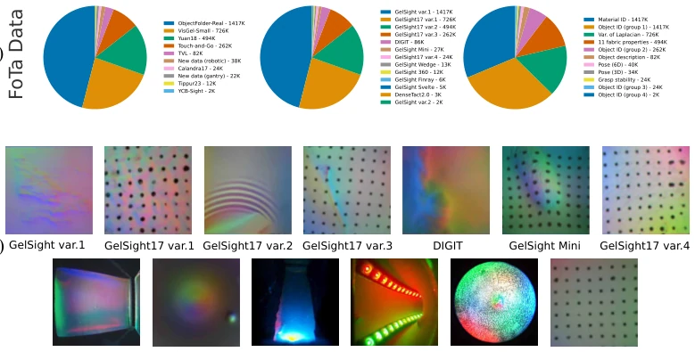
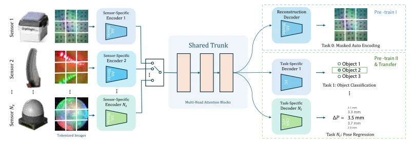
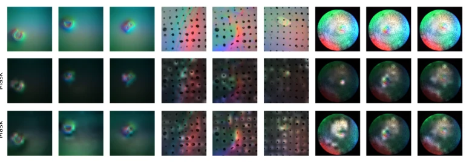
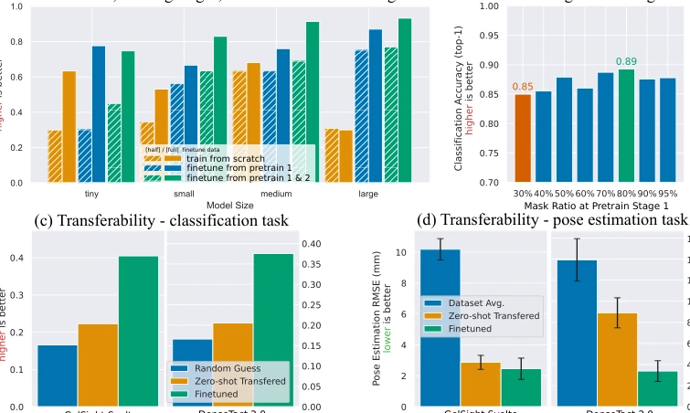
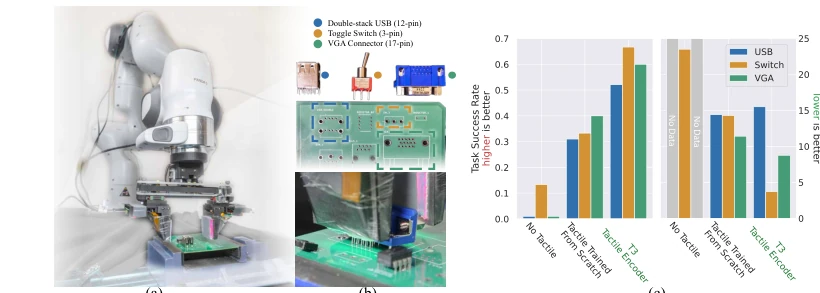

Transferable Tactile Transformers for Representation Learning Across Diverse Sensors and Tasks
Jialiang Zhao, Yuxiang Ma, Lirui Wang, Edward H. Adelson abspdf
论文点评Review
这篇论文试图给触觉领域整点“大模型”的活儿，搞了个 T3 框架和 FoTa 数据集。说实话，触觉传感器五花八门，想搞统一表示确实难，作者把 13 种传感器、11 个任务的数据凑了 300 万张图，这工作量值得点赞。不过别被“零样本迁移”忽悠了，分类任务上提升有限，姿态估计才有点效果。最实在的还是那个电子元件插入任务，比从头训强 25%，比没触觉强 53%。算是给触觉感知界递了把梯子，但离真正的“通用触觉大脑”还差得远，毕竟数据分布还是偏的，而且只支持相机触觉。这算是 Embodied AI 里少有的大规模触觉基础模型尝试，虽然还没完全解决异构问题，但开源了数据和代码，对社区贡献不小。
This paper attempts to bring some "large model" work to the tactile field, developing a T3 framework and FoTa dataset. To be honest, tactile sensors are diverse, and achieving a unified representation is indeed difficult. The authors compiled 3 million images from 13 types of sensors and 11 tasks, a workload worthy of praise. However, do not be misled by "zero-shot transfer"; improvements are limited on classification tasks, with only some effect on pose estimation. The most practical aspect is the electronic component insertion task, performing 25% better than training from scratch and 53% better than without tactile input. It counts as handing a ladder to the tactile perception community, but is still far from a true "general tactile brain," given the biased data distribution and support limited to camera-based tactile sensing. This counts as a rare large-scale tactile foundation model attempt in Embodied AI; although it hasn't fully solved the heterogeneity problem, it has open-sourced data and code, making a significant contribution to the community.
Tactile perception is becoming increasingly popular in robotic manipulation, especially fine manipulation [1, 2]. However, the pain point lies in camera-based tactile sensors being too "independent," with differences in shape, camera count, lighting, and color, leading to a lack of generalizability. Existing datasets mostly target single sensors or tasks; changing sensors requires re-collecting data and re-training [3, 4]. In long-horizon tasks, rewards are sparse, making training from scratch extremely inefficient. Although multimodal learning has made progress [6, 7, 8], tactile data is often misaligned, making contrastive learning difficult. Therefore, the authors aim to solve the representation learning problem for heterogeneous tactile data, extracting shared latent information across sensors and tasks.

Figure 2: FoTa dataset visualizations. (a) We show the mixture and distribution of constituent datasets, sensors, and tasks of the FoTa dataset. Note that not all tasks are utilized in the training of T3. (b) We visualize one tactile image from each constituent sensor in FoTa. Note that in the training of T3, similar sensors share encoders. For example, GelSight17 var. {1-4} share the same encoder, and GelSight var. {1-2} share the same encoder.
方法Method
核心是 T3 架构，由传感器特定编码器 (Enc)、共享主干 (Trunk) 和任务特定解码器 (Dec) 组成。编码器用 ViT [41]，Trunk 也是 ViT，解码器根据任务选 ViT、MLP 或 CNN+MLP。训练分三阶段：Pre-training I 用 MAE 做自监督，利用所有数据（包括无标签的）；Pre-training II 用蒸馏标签做监督学习，涵盖分类、回归等 10 个任务；最后是可选的 Fine-tuning。数据方面，构建了 FoTa 数据集，整合了公开数据集和自采数据，统一格式。这种设计让不同传感器的数据能汇入同一个共享空间，再通过特定头输出结果。MAE 阶段掩码比例设为 80% 效果最好。具体损失函数根据任务定义，分类用交叉熵，回归用 MSE。编码器关注接触区域，Trunk 关注全局特征。
The core is the T3 architecture, composed of sensor-specific encoders (Enc), a shared trunk (Trunk), and task-specific decoders (Dec). Encoders use ViT [41], Trunk is also ViT, decoders select ViT, MLP, or CNN+MLP based on the task. Training is divided into three stages: Pre-training I uses MAE for self-supervision, utilizing all data (including unlabeled); Pre-training II uses distilled labels for supervised learning, covering 10 tasks including classification and regression; finally, optional Fine-tuning. Regarding data, the FoTa dataset was constructed, integrating public datasets and self-collected data with unified formatting. This design allows data from different sensors to merge into a shared space, then output results via specific heads. The mask ratio in the MAE stage is set to 80% for best performance. Specific loss functions are defined according to tasks; classification uses cross-entropy, regression uses MSE. Encoders focus on contact areas, Trunk focuses on global features.

Figure 1: Architecture illustration of Transferable Tactile Transformers (T3). T3 learns a shared representation across heterogeneous tactile sensors and downstream tasks with a shared trunk between sensor-specific encoders and task-specific decoders. The encoders and the shared trunk are constructed with transformer blocks. The decoder architectures are chosen according to the types of the tasks: we use transformer for generative tasks like reconstruction for masked auto encoding, MLP for classification tasks, and CNN + MLP for pose estimation.

Figure 5: Visualization of self-attention weights of the encoders and the trunk of pre-trained T3. Top: the original tactile images. Middle: encoder attention weights applied on the original images as masks. Bottom: trunk attention weights applied on the original images as masks
实验Experiments
用了 FoTa 数据集（308 万数据点，13 传感器，11 任务）。实验对比了从头训练、预训练 I、预训练 II 微调的效果。发现预训练能提升 24% 准确率，模型越大效果越好。零样本迁移在分类任务上提升有限，但在姿态估计上有显著改善，微调后效果更佳。在长周期电子元件插入任务中，T3 作为触觉编码器，成功率比从头训高 25%，比无触觉高 53%，且探索步数更少。消融实验显示 MAE 掩码比例 80% 效果最好。此外，还测试了不同网络规模，Medium 和 Large 在少量数据下表现接近，说明泛化能力强。
Used the FoTa dataset (3.08 million data points, 13 sensors, 11 tasks). Experiments compared the effects of training from scratch, Pre-training I, Pre-training II fine-tuning. Found that pre-training improves accuracy by 24%, larger models yield better results. Zero-shot transfer shows limited improvement on classification tasks but significant improvement on pose estimation, with better results after fine-tuning. In the long-horizon electronic component insertion task, with T3 as the tactile encoder, success rate is 25% higher than training from scratch, 53% higher than without tactile input, and requires fewer exploration steps. Ablation experiments show the MAE mask ratio 80% performs best. Additionally, different network scales were tested; Medium and Large performed similarly under few-shot data, indicating strong generalization capabilities.

Figure 3: Experiments on Task Performance and Transferability of T3. (a) Eval performance with 4 network sizes (tiny, small, medium, large), 3 training schemes (train from scratch, fine-tune from pre-train 1, fine-tune from pre-train 2), and 2 amounts of fine-tuning data (half data and full data) (b) Eval performance with different masking ratios during Pre-training I. (c) Transferability test on a classification task. (d) Transferability test on a pose estimation task.

Figure 4: Real world sub-millimeter robotic insertion tasks. (a) Hardware setup. (b) The 3 evaluation electronics parts and their respective mounting places on a PCB. (c) Insertion success rate and average steps taken for each task. Policies trained with the T3 tactile encoder achieved the highest success rate and lowest averaged episode length.